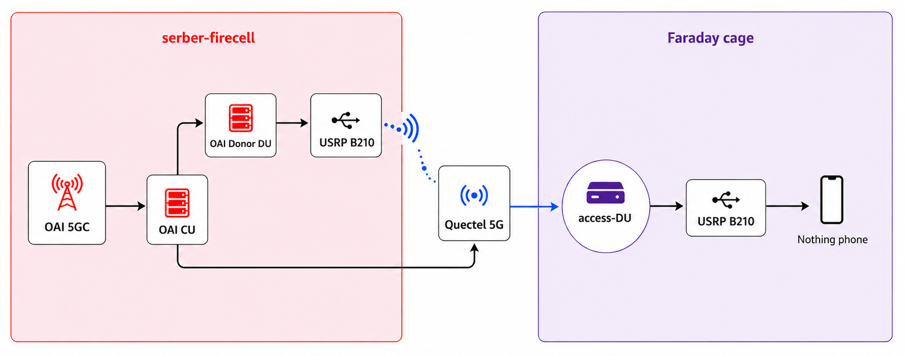

Architecture
From OAI CU/DU Lab
Supported split
Firecell hosts the OAI 5GC, the CU for the access DU, and a separate monolithic donor gNB. The donor cell serves only the Quectel modem. The selected MiniPC, Raspberry Pi, or Jetson access DU serves the commercial phone, with its F1 carried over the selected transport.

Monolithic reference
The standalone Firecell core-plus-gNB mode remains the reference for checking core, RF, subscriber, PWS, and user-plane behavior independently of the split.
SIB8/PWS
The CU handles warning content and the F1AP request. The DU schedules the resulting system information. Network logs and phone-visible warning reception are different acceptance gates.
Rollback baseline
MiniPC Ethernet CU/DU with SIB8 is the canonical rollback. The monolithic deployment remains a separate reference.
Reconciled 2026-07-28 with the maintained operator console.